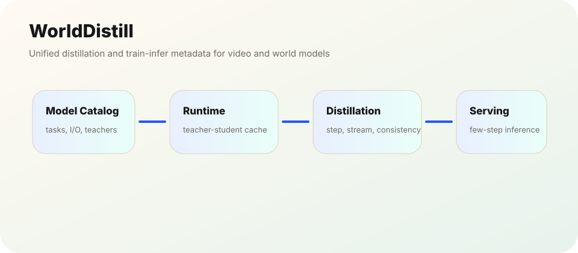

Video Generation · World Models · Distillation Infra
WorldDistill
A unified toolkit for distilling and accelerating video, image, audio-video generation models and interactive world models.

System Goal
WorldDistill is designed to turn model-specific distillation recipes into a reusable platform. It unifies model cataloging, training presets, teacher-student runtime, inference metadata, and distributed acceleration for video and world models.
Core Modules
- Model catalog for architectures, tasks, modality I/O, and teacher-student pairing.
- TeacherStudentRuntime with cache, fused supervision, and experiment tracking.
- LightX2V-based multimodal inference pipeline for video/image/audio-video tasks.
- DDP/FSDP/DeepSpeed, sequence parallelism, checkpointing, and mixed precision.
Distillation Methods
- Step distillation for 2/4/8-step students.
- Stream distillation / Diffusion Forcing for long videos.
- Consistency distillation with EMA target and Huber loss.
- Context forcing for memory-aware world-model rollouts.
Formula View
The common abstraction is flow/velocity prediction along a noise-to-data trajectory, which makes few-step distillation and consistency training easier to unify.
x_t = (1 - σ) · x_0 + σ · ε
Flow-matching style interpolation between clean data and noise.
x_0 = x_t - σ · v_θ(x_t, t)
Recover clean prediction from the student velocity field.
x_{t-1} = x_t + Δt · v_θ(x_t, t)
Few-step update used by distilled video/world-model students.
Engineering Value
The main value is not a single loss function, but converting video/world-model distillation into a maintainable engineering asset: new models and new distillation methods can be registered without rewriting the whole pipeline.